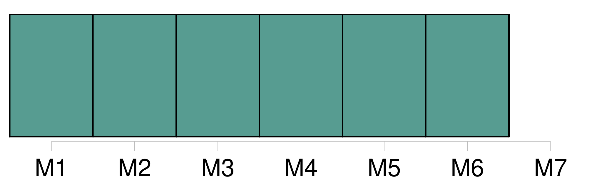

Longueur nb maillons : 6 mentions |
 |
[Mardi] cinq corps de Sapeurs-pompiers sont intervenus à Ecurey pour combattre un incendie qui s'était déclaré dans l'un des silos de stockage des produits finis de Carbofrance. [366 phrases]
Pourtant, [mardi] , il y avait bien quelques randonneurs, courageux ou inconscients, à passer devant la ferme-auberge du Ballon, les visages figés par la pluie cinglante et les jeans gorgés d'eau. [10 phrases]
Elément troublant : l'emploi du gaz est commun au suicide du frère, aux faits des Errues et à la tentative de suicide de [mardi] [7 phrases]
Dans la nuit de lundi à [mardi] , ce sont des décorations installées devant la maison d'un particulier, faubourg de Brisach à Belfort, à hauteur de la rue Vautrin, qui ont disparu. [69 phrases]
Il a expliqué aux policiers que, pendant la nuit de lundi à [mardi] , il a voulu mettre fin à ses jours en ouvrant le gaz qui alimente ses plaques de cuisson, dans la cuisine. [35 phrases]
L'explosion s'est produite, vers 4 heures du matin, [mardi] , dans une ancienne maison de maître abritant six appartements au 13 rue du Tramway à Belfort. |

|
Il est possible de télécharger la ressource sur la page Ortolang |
Si vous avez des questions ou vous voyez des erreurs, merci d'envoyer un mail à silvia.federzoni89@gmail.com |